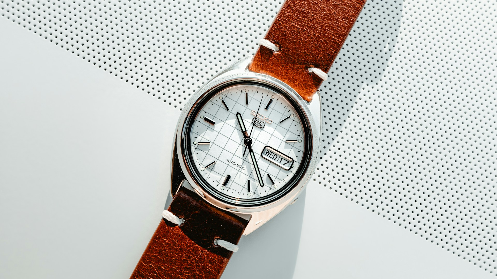
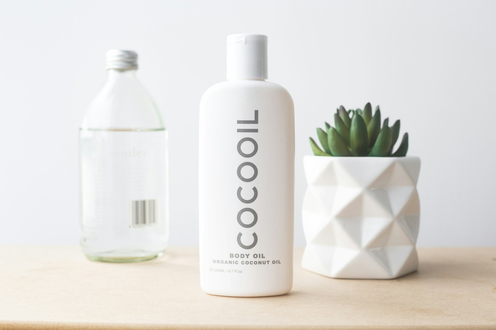
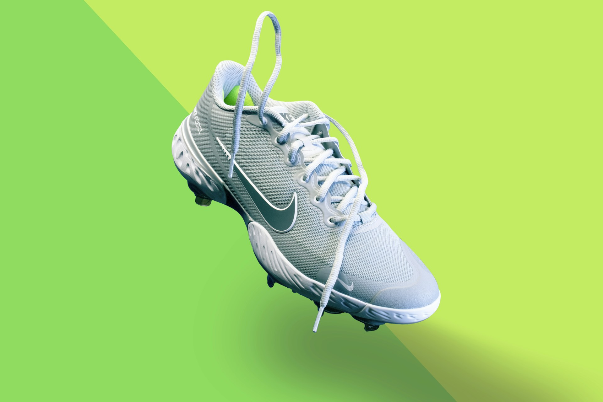
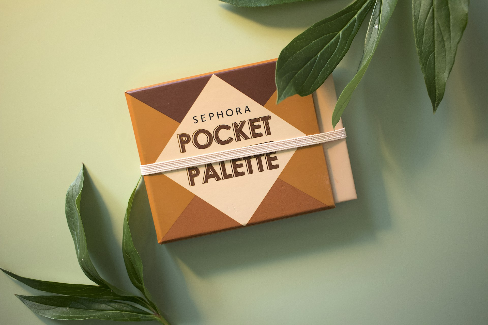

View project
Epoch
Brand and digital launch for a premium everyday watch--positioning, D2C site, and campaign visuals I art-directed alongside the founder.
Freelance Product Designer helping startups and agencies craft clean, Conversion-Focused Interfaces.

Brand and digital launch for a premium everyday watch--positioning, D2C site, and campaign visuals I art-directed alongside the founder.

Packaging and Shopify visuals for a small-batch organic coconut oil brand--earthy, trustworthy, and shelf-ready without looking like every other jar on the aisle.

Brand world for a low-ABV sparkling spritzer--label system, flavor architecture, and a launch site that feels like summer without looking like soda.

Identity and campaign landing for an independent running shoe--performance story, lookbook structure, and web UI that sells emotion as much as tech.

Visual identity and product pages for a football boot built for firm ground and media moments--bold, pitch-ready, and unmistakable on a wall of sameness.

Packaging and site design for a minimalist skincare line--clinical calm meets soft warmth, with a freelancer-led system from jar to checkout.
Strategy through launch in one thread.
Handoff-ready files and specs.
Async collaboration, clear milestones.
Systems and patterns that scale.
Outcome-focused -- ship with confidence.
Perfect For Startups And Small Businesses That Need A High-Impact Site Or Design Sprint.
Ideal For Portfolios, Product Launches, Or SaaS Landing Pages.
Ongoing Design Partnership For Teams That Need Consistent Creative Support.
Best For Teams That Want On-Demand Design Without Hiring Full-Time.